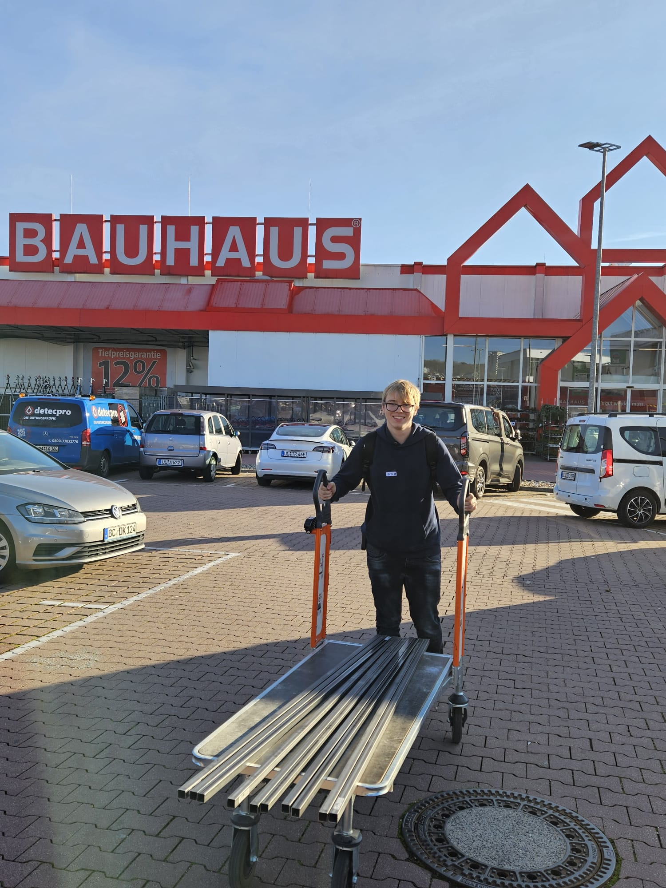

Unser Forschungsprojekt


Kooperation mit BAUHAUS 24.11.2026
BAUHAUS unterstützte unser Forschungsprojekt durch eine großzügige Sachspende und ermöglichte uns damit den Bau unserer Messstationen am Banzenloch.
Mehr lesen
Vorstellung der Forschungsidee --Datum--
Am.. war es endlich soweit und ein .., war ausgearbeitet...
Mehr lesen
Besuch des Banzenlochs 18.9.2026
Es war ein sonniger Nachmittag und so entschlossen wir uns dazu, noch das Banzenloch bei Arnegg aufzusuchen, von welchem wir schon viel gehört hatten.
Mehr lesen